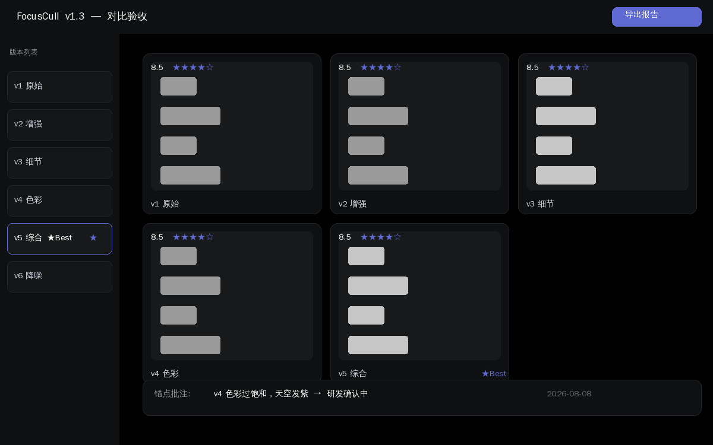

为什么做它
过几天再问“上次为什么选这版”，就得在聊天记录里找当时的图和理由。有时找到了那句话，还得猜说的是哪一处。
我想留一份能翻回去看的记录，里面有选过的图、标过的位置和当时写下的理由。
“脸侧这块还要再淡一点。”这句话和它指的位置，可以一起留着。
我是怎么做的
我先理了一遍自己平时看图的步骤，再画界面，用 AI 帮我把它写成能跑的桌面软件。哪里用着别扭，就回去再改一轮。
想试试的话
下载方式和价格还在考虑，也在想能不能做成一次买断。
代码目前放在私有仓库。想先试用，可以到首页给我写邮件。
我做的小工具
同一张照片修了三版，哪版肤色更自然？把几版图摆在一起，就好比较了。哪里想再改，直接在图上点一下，留句话。看完还能把选的图和批注一起导出。

FocusCull 旧版界面示意图
几版图可以并排摆着，也可以切到单张看。放大或拖动一张，其他几版会跟着动。
可以加星、打分，最后把最满意的那版标为 Best。
在要说的位置点一下，写条批注。别人看时能知道你指的是哪儿。
用蒙版只对比想看的区域，比如脸上的肤色或头发边缘的细节。
把选中的图、评分和批注打包成一份 HTML 报告。发给别人，离线用浏览器也能看。
过几天再问“上次为什么选这版”，就得在聊天记录里找当时的图和理由。有时找到了那句话，还得猜说的是哪一处。
我想留一份能翻回去看的记录，里面有选过的图、标过的位置和当时写下的理由。
“脸侧这块还要再淡一点。”这句话和它指的位置，可以一起留着。
我先理了一遍自己平时看图的步骤，再画界面，用 AI 帮我把它写成能跑的桌面软件。哪里用着别扭，就回去再改一轮。
下载方式和价格还在考虑，也在想能不能做成一次买断。
代码目前放在私有仓库。想先试用，可以到首页给我写邮件。